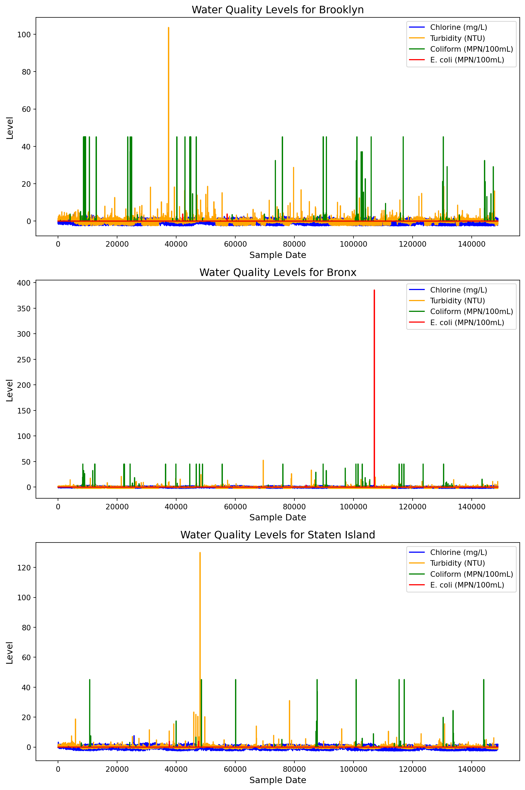

# check to make sure all values are possibledata = data[data['chlorine'] >0]data = data[data['coliform'] >0]data = data[data['ecoli'] >0]
Code
# only 4 missing values total - dropdata = data.dropna()data.shape
(148701, 7)
Code
# read in data for sampling sitessites = pd.read_csv('../data/sampling_sites_extended.csv')# use search engine to find demographic datasearch = SearchEngine() zipdata = [] for zipcode in sites['ZIP Code']: info = search.by_zipcode(zipcode)ifbool(info) ==True: zipdata.append({'ZIP Code': zipcode,'housing_units': info.housing_units /1000,'occupied_housing_units': info.occupied_housing_units /1000, 'median_home_value': info.median_home_value /1000,'median_household_income': info.median_household_income /1000 })# add demographic data to sampling siteszipdata = pd.DataFrame(zipdata) sites = pd.merge(sites, zipdata, how ='inner', on ='ZIP Code')sites = sites.drop_duplicates()# merge with location based informationsites.rename(columns = {'Sample Site': 'sample_site'}, inplace =True)data = pd.merge(data, sites, on ='sample_site')
Code
# set 'sample_date' as the index and sort by 'sample_date'data = data.set_index('sample_date')data = data.sort_values(by='sample_date')# prepare for modellingdata = data.drop(columns = ['OBJECTID', 'sample_site', 'sample_class', 'Sample Station (SS) - Location Description','X - Coordinate', 'Y - Coordinate','City or Placename'])# separate location data columns from the rest of the datalocation_columns = ['ZIP Code', 'latitude', 'longitude', 'housing_units', 'occupied_housing_units', 'median_home_value', 'median_household_income']# identify the other columns (excluding location data)columns_to_scale = [col for col in data.columns if col notin location_columns]# scale only the non-location columnsdata[columns_to_scale] = (data[columns_to_scale] - data[columns_to_scale].mean()) / data[columns_to_scale].std()# save cleaned and merged data to new filedata.to_csv('../data/data_merged.csv', index=False)
2.1 Borough information
Code
from uszipcode import SearchEnginefrom sklearn.neighbors import KNeighborsClassifierfrom sklearn.preprocessing import LabelEncoder# lowercase column namesdata.columns = data.columns.str.lower()# initialize the search enginesearch = SearchEngine()# list of nyc boroughsnyc_boroughs = ['Manhattan', 'Brooklyn', 'Queens', 'Bronx', 'Staten Island']# function to get the borough only if it's one of the 5 boroughsdef get_borough(zipcode): info = search.by_zipcode(zipcode)if info andhasattr(info, 'major_city'):# check if the major city corresponds to one of the 5 boroughs major_city = info.major_cityif major_city in nyc_boroughs:return major_cityreturnNone# return None if it's not one of the 5 boroughs# apply the function to 'zip code' column and create a new column 'borough'data['borough'] = data['zip code'].apply(lambda x: get_borough(str(x)))# fill missing boroughs with KNN# only use rows where borough is not null for training the modelimpute_X = data[data['borough'].notnull()][['latitude', 'longitude']]impute_Y = data[data['borough'].notnull()]['borough']# encode borough labels for classificationencoder = LabelEncoder()impute_Y = encoder.fit_transform(impute_Y)# initialize KNN classifier and train itknn = KNeighborsClassifier()knn.fit(impute_X, impute_Y)# for missing boroughs, use latitude and longitude to predictX_missing = data[data['borough'].isnull()][['latitude', 'longitude']]# predict missing boroughspredicted_labels = knn.predict(X_missing)predicted_boroughs = encoder.inverse_transform(predicted_labels)# fill missing boroughs in the datadata.loc[data['borough'].isnull(), 'borough'] = predicted_boroughs# check for remaining missing borough valuesprint(f'Missing boroughs after imputation: {data["borough"].isnull().sum()}')# Save the updated data with borough namesdata.to_csv('../data/merged_data_with_borough.csv', index=False)
Missing boroughs after imputation: 0
3 Visualization
Code
import seaborn as sns# load your datamerged_df = pd.read_csv('../data/merged_data_with_borough.csv')# define the list of boroughs to plotboroughs_to_plot = ['Brooklyn', 'Bronx', 'Staten Island']# set up a figure to hold multiple subplots (3 boroughs)fig, axes = plt.subplots(nrows=3, ncols=1, figsize=(10, 15))# loop over each borough and create a plotfor i, borough inenumerate(boroughs_to_plot):# filter data for the current borough borough_data = merged_df[merged_df['borough'] == borough]# plotting the data for this borough axes[i].plot(borough_data.index, borough_data['chlorine'], label='Chlorine (mg/L)', color='blue') axes[i].plot(borough_data.index, borough_data['turbidity'], label='Turbidity (NTU)', color ='orange') axes[i].plot(borough_data.index, borough_data['coliform'], label='Coliform (MPN/100mL)', color ='green') axes[i].plot(borough_data.index, borough_data['ecoli'], label='E. coli (MPN/100mL)', color='red')# set labels and title for each subplot axes[i].set_title(f'Water Quality Levels for {borough}', fontsize=14) axes[i].set_xlabel('Sample Date', fontsize=12) axes[i].set_ylabel('Level', fontsize=12) axes[i].legend(loc='upper right')# adjust layout to avoid overlapping labelsplt.tight_layout()plt.show()

4 Modelling
4.1 Preprocessing
Code
merged_df['ecoli'].mean()# create response variable based off national standardsmerged_df['compliant'] = ( (merged_df['chlorine'] <4) & (merged_df['ecoli'] <0) & ( merged_df['turbidity'] <1) & (merged_df['coliform'] <0)).astype(int)merged_df['compliant'].value_counts()